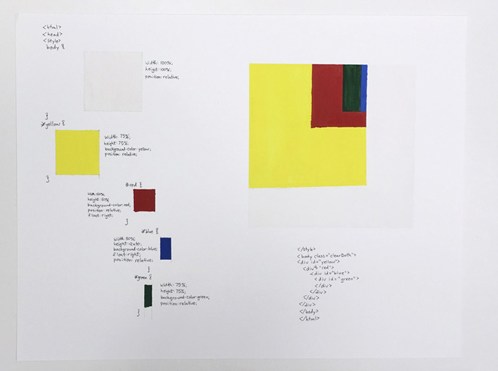
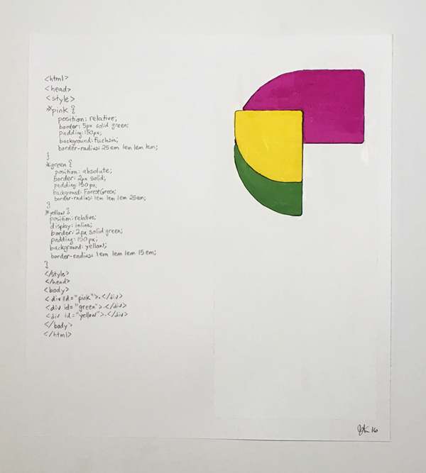
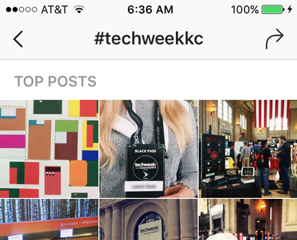

Web Developer
In 2014, I went to the MakerSpace at my nearby library to see what I could do to improve my technology skills. I used the computers to learn to write code, 3D modeling and printing, and improve my skills with graphic design. I started to merge my art practice with my new adventures in code. This drawing shows the translation from the arrangement of shapes on the screen to the language of the computer. I wrote the markup declarations next to the shapes they produced, learning to code while making abstract art:
I divided the screen into areas called divs and made their backgrounds different colors. Then as I changed the code the divs rearranged themselves on the screen.
I tagged my doodles #funwithcode and they showed up on the 2016 TechWeek Instagram! They're in the top left corner:
I discovered that the tech community has many things in common with the art community. People volunteer to share their "trade secrets" at meetups and love to see new coders learn and create new things. There is a sprit of generosity in both groups. I began mentoring for Kansas City Women in Technology's Coding and Cocktails program. KCWiT has taught me about tech culture and I've made lots of friends. I have assisted in the instruction of Version Control, Front-End Architecture, and JavaScript.
Since beginning LaunchCode, learning Python has strengthened my skills as a programmer. I am preparing for the next stage in my career: a position where I can use my skills in a technology setting. I am thrilled to have the opportunity to learn in the supportive tech community Kansas City has to offer.